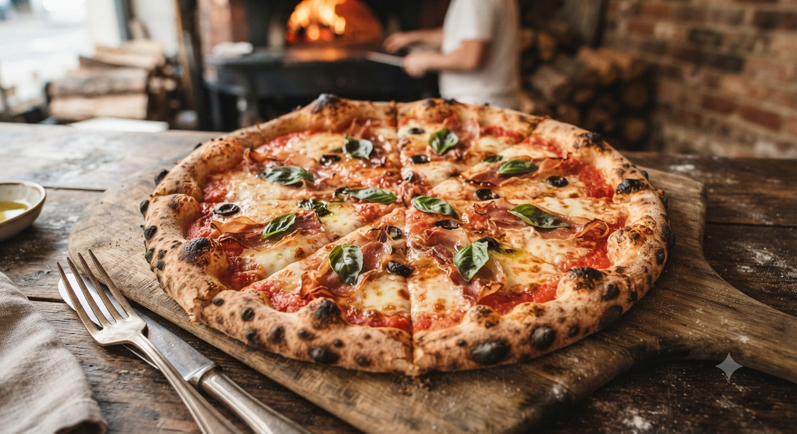
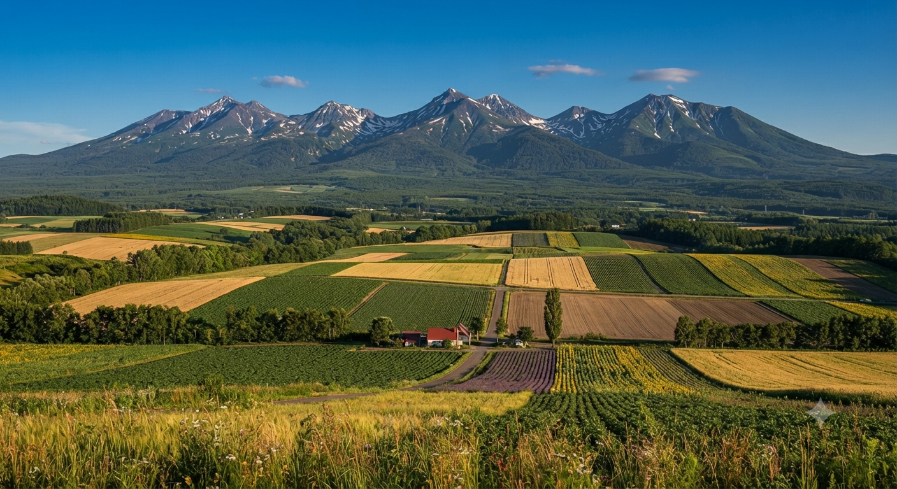

耳までパリッと美味しい、クリスピーな本格ローマピザ。
愛犬・愛猫と一緒に、標高の高い贅沢を味わう。
クチコミ満足度
ピザ生地の厚み
ペット同伴可能率
石窯の最高温度

手作りの薄型生地は、薪の火で一気に焼くことで「パリッ」「サクッ」とした食感に。耳までソースを塗るのがTSUMORI流のこだわりです。
保護施設「ペットの里」に併設。店内も同伴可能で、広大なドッグランも隣接。愛犬の笑顔を見ながら本格ピザを楽しめます。

テラス席からは雄大な岩手山を一望。川のせせらぎや鳥の声がBGM。大自然の中で食べるピザは、一生の思い出になります。
本格石窯ピザ工房TSUMORI with Peace
〒020-0682 岩手県滝沢市鵜飼臨安102
ナビ設定のコツ
「岩手山パノラマ大キャンプ場」を目的地にセットすることをお勧めします。道が細いため、対向車には十分お気をつけください。
TSUMORIがお客様の声にお応えして準備中の、新しいワクワクするサービスをご紹介します。
テントやコテージで焼きたてをそのまま！スマホで時間を指定して、待ち時間なしでキャンプサイトへお持ち帰り。
ワンちゃんも一緒にテーブルを囲める！塩分やスパイスを一切使わない、愛犬の体に優しい専用焼き立てピザを開発中。